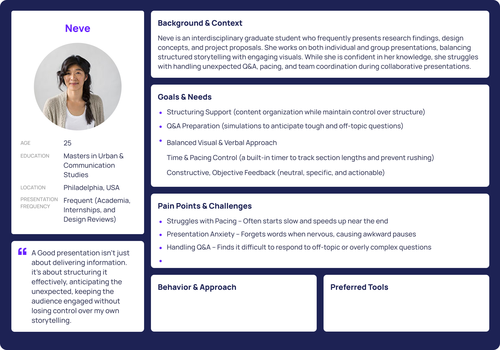
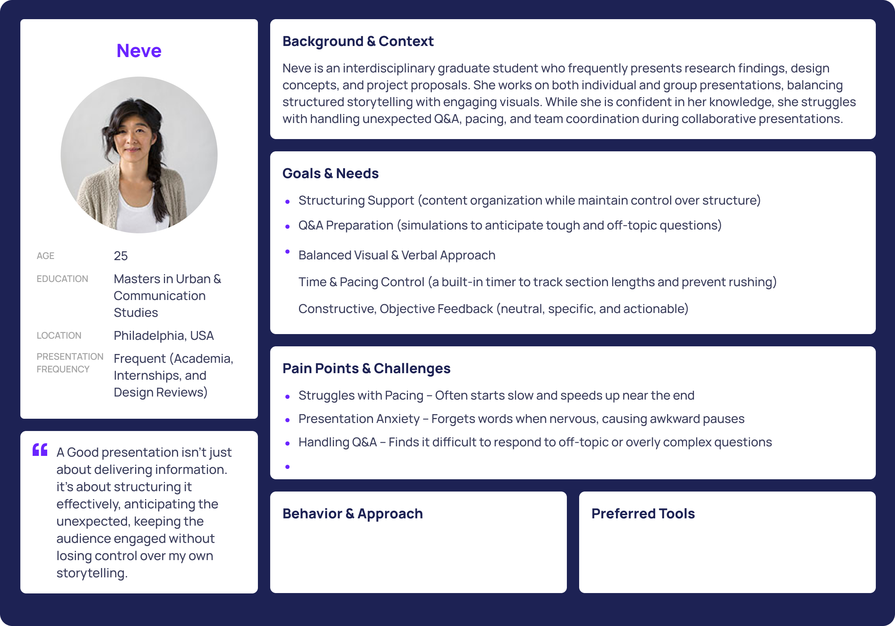

Preasy - A UX Case Study on Rethinking Presentation Preparation
Preasy is a web app which helps users efficiently create slides, rehearse presentations with feedback, and manage team workflows. It supports students and professionals who struggle with clear and confident presentations due to unpreparedness and poor structure.
Problem
People rely on too many scattered tools when preparing for a presentation—Google Slides,Canva, chat apps, Zoom, Microsoft Powerpoint, and more. This disjointed process increases stress and leads to last-minute chaos. Users lack a unified space to plan, rehearse, gather feedback, and work with others efficiently.
Problem Statement:Presentation preparation is rarely streamlined.Students and professionals jump between tools for design, rehearsal, feedback, and collaboration—causing friction, confusion, and stress.
Objective:Research, plan, and design a web experience to help users prepare presentations more efficiently, with a focus on reducing prep time and improving delivery confidence through a unified workflow.

Research & Insights
- Conducted Competitive Research & Analysis
- Conducted 4 user interviews on Zoom(BFA fashion student, BS psychology student, Master city planing student, and Master economics student)
- Collected 10+ survey responses on presentation preparation habits
Pain points: Difficult to rehearse, unclear feedback, conflicting versions in team projects.
 


Core Features
- Practice Mode with timer and rehearsal feedback
- Feedback Tags to ask for help on specific issues like pacing
- Team Dashboard to assign slides and track progress
- Slide Progress Tracker to visualize completion and readiness

Branding & Visual Identity
Preasy's visual design uses clean layout grids, soft neutral tones, and a balance of utility and friendliness. The logo and font choices aim to convey approachability without sacrificing focus. I designed a Figma-based system with reusable components and scalable text styles.


User Testing
After usability testing with classmates, peers and professors, I received feedback on hierarchy clarity, button size, and onboarding cues. Iterative refinement improved discoverability and supported different workflows.

Reflection
This was the first time I led a UX project through a full cycle—from research to case study documentation. I improved in narrowing scope, prioritizing features, and presenting insights clearly. Seeing how real feedback shaped the product was exciting and humbling. Preasy confirmed my passion for product design and helped me grow into a more intentional designer.